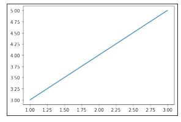

import io
import nbformat
import matplotlib as mpl
import matplotlib.pyplot as plt
from traitlets.config import Config
from nbconvert import HTMLExporter,\
RSTExporterИсточники
Как пользоваться nbconvert
nbconvernt моежт быть использован как утилита командной строки или же python библиотека. Тут я буду рассматривать nbconvert как python библиотеку.
- https://nbconvert.readthedocs.io/en/latest/index.html - официальная документация nbconvert.
- https://nbconvert.readthedocs.io/en/latest/api/exporters.html#nbconvert.exporters.NotebookExporter - страница документации посвященная Exporters;
- https://nbconvert.readthedocs.io/en/latest/api/preprocessors.html - препроцессоры доступные по умолчанию.
Прочитать notebook
Используя nbformat.read я могу прочесть произвольный notebook из str. Получается, объект типа nbformat.notebooknode.NotebookNode.
# читаю notebook как str
nbfile = open("example_notebook.ipynb", "r")
note_book_txt = nbfile.read()
nbfile.close()
# из строчки делаю nbformat.notebooknode.NotebookNode
notebook = nbformat.reads(note_book_txt, as_version=4)Этот nbformat.notebooknode.NotebookNode является dict- подобным объектом, со следующими ключами:
notebook.keys()dict_keys(['cells', 'metadata', 'nbformat', 'nbformat_minor'])'cells'
Позволяет достать из объекта ячейки в текстовой форме.
Вот например ячейка с makrdown.
notebook['cells'][2]{'cell_type': 'markdown',
'id': '025cd9ca-bce7-4377-8a2c-d7d032b5d061',
'metadata': {'slideshow': {'slide_type': 'fragment'}, 'tags': []},
'source': '# Latex\n\n$$f(x) = x_2+3x+22$$'}Экспортировать Notebook
Можно используя exporters объекты.
Все они содержат методы позволяющие провести конвертацию:
from_notebook_node- преобразует описанный вышеnbformat.notebooknode.NotebookNode;from_file- преобразует объект-файл (просто окрытый в python файл);from_filename- преобразует файл по имени в системе.
HTMLExporter
Позволяет экспортировать файл в html.
html_exporter = HTMLExporter(template_name='classic')
(body, resources) = html_exporter.from_notebook_node(notebook)И так возвращаяется два объекта
body
Первый это тело html файла, его можно сразу сохранить и получается вполне себе html.
file = open("basic_html_exporter.html", "w+")
file.write(body)
file.close()Но при спользовании такого подхода есть проблема - картинки, формируемые как часть markdown разметки не будут встроены в .html, а будут лишь ссылками на файлы.
resources
Список ресурсов используемых для формирования jupyter.
resourcesResourcesDict(None,
{'metadata': ResourcesDict(None, {'name': 'Notebook'}),
'output_extension': '.html',
'deprecated': <function nbconvert.exporters.templateexporter.deprecated(msg)>,
'theme': 'light',
'include_css': <function nbconvert.exporters.html.HTMLExporter._init_resources.<locals>.resources_include_css(name)>,
'include_lab_theme': <function nbconvert.exporters.html.HTMLExporter._init_resources.<locals>.resources_include_lab_theme(name)>,
'include_js': <function nbconvert.exporters.html.HTMLExporter._init_resources.<locals>.resources_include_js(name)>,
'include_url': <function nbconvert.exporters.html.HTMLExporter._init_resources.<locals>.resources_include_url(name)>,
'require_js_url': 'https://cdnjs.cloudflare.com/ajax/libs/require.js/2.1.10/require.min.js',
'mathjax_url': 'https://cdnjs.cloudflare.com/ajax/libs/mathjax/2.7.7/latest.js?config=TeX-AMS_CHTML-full,Safe',
'jquery_url': 'https://cdnjs.cloudflare.com/ajax/libs/jquery/2.0.3/jquery.min.js',
'jupyter_widgets_base_url': 'https://unpkg.com/',
'widget_renderer_url': '',
'html_manager_semver_range': '*',
'inlining': {'css': ['pre { line-height: 125%; }\ntd.linenos .normal { color: inherit; background-color: transparent; padding-left: 5px; padding-right: 5px; }\nspan.linenos { color: inherit; background-color: transparent; padding-left: 5px; padding-right: 5px; }\ntd.linenos .special { color: #000000; background-color: #ffffc0; padding-left: 5px; padding-right: 5px; }\nspan.linenos.special { color: #000000; background-color: #ffffc0; padding-left: 5px; padding-right: 5px; }\n.highlight .hll { background-color: #ffffcc }\n.highlight { background: #f8f8f8; }\n.highlight .c { color: #3D7B7B; font-style: italic } /* Comment */\n.highlight .err { border: 1px solid #FF0000 } /* Error */\n.highlight .k { color: #008000; font-weight: bold } /* Keyword */\n.highlight .o { color: #666666 } /* Operator */\n.highlight .ch { color: #3D7B7B; font-style: italic } /* Comment.Hashbang */\n.highlight .cm { color: #3D7B7B; font-style: italic } /* Comment.Multiline */\n.highlight .cp { color: #9C6500 } /* Comment.Preproc */\n.highlight .cpf { color: #3D7B7B; font-style: italic } /* Comment.PreprocFile */\n.highlight .c1 { color: #3D7B7B; font-style: italic } /* Comment.Single */\n.highlight .cs { color: #3D7B7B; font-style: italic } /* Comment.Special */\n.highlight .gd { color: #A00000 } /* Generic.Deleted */\n.highlight .ge { font-style: italic } /* Generic.Emph */\n.highlight .gr { color: #E40000 } /* Generic.Error */\n.highlight .gh { color: #000080; font-weight: bold } /* Generic.Heading */\n.highlight .gi { color: #008400 } /* Generic.Inserted */\n.highlight .go { color: #717171 } /* Generic.Output */\n.highlight .gp { color: #000080; font-weight: bold } /* Generic.Prompt */\n.highlight .gs { font-weight: bold } /* Generic.Strong */\n.highlight .gu { color: #800080; font-weight: bold } /* Generic.Subheading */\n.highlight .gt { color: #0044DD } /* Generic.Traceback */\n.highlight .kc { color: #008000; font-weight: bold } /* Keyword.Constant */\n.highlight .kd { color: #008000; font-weight: bold } /* Keyword.Declaration */\n.highlight .kn { color: #008000; font-weight: bold } /* Keyword.Namespace */\n.highlight .kp { color: #008000 } /* Keyword.Pseudo */\n.highlight .kr { color: #008000; font-weight: bold } /* Keyword.Reserved */\n.highlight .kt { color: #B00040 } /* Keyword.Type */\n.highlight .m { color: #666666 } /* Literal.Number */\n.highlight .s { color: #BA2121 } /* Literal.String */\n.highlight .na { color: #687822 } /* Name.Attribute */\n.highlight .nb { color: #008000 } /* Name.Builtin */\n.highlight .nc { color: #0000FF; font-weight: bold } /* Name.Class */\n.highlight .no { color: #880000 } /* Name.Constant */\n.highlight .nd { color: #AA22FF } /* Name.Decorator */\n.highlight .ni { color: #717171; font-weight: bold } /* Name.Entity */\n.highlight .ne { color: #CB3F38; font-weight: bold } /* Name.Exception */\n.highlight .nf { color: #0000FF } /* Name.Function */\n.highlight .nl { color: #767600 } /* Name.Label */\n.highlight .nn { color: #0000FF; font-weight: bold } /* Name.Namespace */\n.highlight .nt { color: #008000; font-weight: bold } /* Name.Tag */\n.highlight .nv { color: #19177C } /* Name.Variable */\n.highlight .ow { color: #AA22FF; font-weight: bold } /* Operator.Word */\n.highlight .w { color: #bbbbbb } /* Text.Whitespace */\n.highlight .mb { color: #666666 } /* Literal.Number.Bin */\n.highlight .mf { color: #666666 } /* Literal.Number.Float */\n.highlight .mh { color: #666666 } /* Literal.Number.Hex */\n.highlight .mi { color: #666666 } /* Literal.Number.Integer */\n.highlight .mo { color: #666666 } /* Literal.Number.Oct */\n.highlight .sa { color: #BA2121 } /* Literal.String.Affix */\n.highlight .sb { color: #BA2121 } /* Literal.String.Backtick */\n.highlight .sc { color: #BA2121 } /* Literal.String.Char */\n.highlight .dl { color: #BA2121 } /* Literal.String.Delimiter */\n.highlight .sd { color: #BA2121; font-style: italic } /* Literal.String.Doc */\n.highlight .s2 { color: #BA2121 } /* Literal.String.Double */\n.highlight .se { color: #AA5D1F; font-weight: bold } /* Literal.String.Escape */\n.highlight .sh { color: #BA2121 } /* Literal.String.Heredoc */\n.highlight .si { color: #A45A77; font-weight: bold } /* Literal.String.Interpol */\n.highlight .sx { color: #008000 } /* Literal.String.Other */\n.highlight .sr { color: #A45A77 } /* Literal.String.Regex */\n.highlight .s1 { color: #BA2121 } /* Literal.String.Single */\n.highlight .ss { color: #19177C } /* Literal.String.Symbol */\n.highlight .bp { color: #008000 } /* Name.Builtin.Pseudo */\n.highlight .fm { color: #0000FF } /* Name.Function.Magic */\n.highlight .vc { color: #19177C } /* Name.Variable.Class */\n.highlight .vg { color: #19177C } /* Name.Variable.Global */\n.highlight .vi { color: #19177C } /* Name.Variable.Instance */\n.highlight .vm { color: #19177C } /* Name.Variable.Magic */\n.highlight .il { color: #666666 } /* Literal.Number.Integer.Long */']},
'raw_mimetypes': ['text/html', ''],
'global_content_filter': {'include_code': True,
'include_markdown': True,
'include_raw': True,
'include_unknown': True,
'include_input': True,
'include_output': True,
'include_output_stdin': False,
'include_input_prompt': True,
'include_output_prompt': True,
'no_prompt': False}})RSTExporter
Позволяет диаграммы на графике экспортировать не в .html файл а в ресурсы.
Способ использования ничем не отличатеся от рассмотренного выше HTMLExporter.
rst_exporter = RSTExporter()
(body, resources) = rst_exporter.from_notebook_node(notebook)Но полученный body содержит только текст.
file = open("rst_exporter.html", "w+")
file.write(body)
file.close()Некоторые дополнительные элементы сохранены в resources. Так, например, картинки-результаты выполнения ячеек будут лежать resources["outputs"]. Далее пример их извлечения:
outputs = resources["outputs"]
outputs_len = len(outputs)
plt.figure(figsize = [5,20])
for i, pic_name in enumerate(outputs.keys()):
plt.subplot(outputs_len, 1, i+1)
plt.xticks([]); plt.yticks([])
plt.imshow(
plt.imread(
io.BytesIO(outputs[pic_name]), format='jpeg'
)
)
Где были сохранены стили, и почему слетают способы формирования ячеек не понятно.
Препроцессоры
Рассмотренные выше expoter-ы применяют к notebook препроцессоры - которые собвенно и занимаются обработкой notebook. Подробнее об механизме тут. Суть в ном что exporter-ы можно настраивать используя препроцессоры. nbconvert предоставляет ряд собственных препроцессоров, которые будут рассмотрены далее.
ExtractOutputPreprocessor
Позволяет сохранять результаты ячеек в ресусы.
c = Config()
c.HTMLExporter.preprocessors = [
'nbconvert.preprocessors.ExtractOutputPreprocessor'
]
html_exporter_with_figs = HTMLExporter(config=c)
html_exporter_with_figs.preprocessors['nbconvert.preprocessors.ExtractOutputPreprocessor']Сравнение результатов работы html_exporter без использованием препросцессора ExtractOutputPreprocessor и с ним.
(_, resources) = html_exporter.from_notebook_node(notebook)
(_, resources_with_fig) = html_exporter_with_figs.from_notebook_node(notebook)
print("resources without figures:")
print(sorted(resources.keys()))
print("\nresources with extracted figures (notice that there's one more field called 'outputs'):")
print(sorted(resources_with_fig.keys()))
print("\nthe actual figures are:")
print(sorted(resources_with_fig['outputs'].keys()))resources without figures:
['deprecated', 'global_content_filter', 'html_manager_semver_range', 'include_css', 'include_js', 'include_lab_theme', 'include_url', 'inlining', 'jquery_url', 'jupyter_widgets_base_url', 'mathjax_url', 'metadata', 'output_extension', 'raw_mimetypes', 'require_js_url', 'theme', 'widget_renderer_url']
resources with extracted figures (notice that there's one more field called 'outputs'):
['deprecated', 'global_content_filter', 'html_manager_semver_range', 'include_css', 'include_js', 'include_lab_theme', 'include_url', 'inlining', 'jquery_url', 'jupyter_widgets_base_url', 'mathjax_url', 'metadata', 'output_extension', 'outputs', 'raw_mimetypes', 'require_js_url', 'theme', 'widget_renderer_url']
the actual figures are:
['output_4_0.png']Как видно во втором случае в ресурсах появился ещё и ключ 'outputs'. А по доступу к именам там содержаться результаты выполнения ячеек.
TagRemovePreprocessor
Позволяет удалить input, output ячейки или всю ячейку, по выбранному тэгу.
from nbconvert.preprocessors import TagRemovePreprocessor
c = Config()
c.TagRemovePreprocessor.remove_cell_tags = ("remove_cell",)
c.TagRemovePreprocessor.remove_all_outputs_tags = ('remove_output',)
c.TagRemovePreprocessor.remove_input_tags = ('remove_input',)
c.TagRemovePreprocessor.enabled = True
c.HTMLExporter.preprocessors = ["nbconvert.preprocessors.TagRemovePreprocessor"]
exporter = HTMLExporter(config=c)
# в оригинальном примере следующая сторочка не закомментирована
# но вроде работает и без неё и не понятно, зачем она нужна
# exporter.register_preprocessor(TagRemovePreprocessor(config=c),True)
output = HTMLExporter(config=c).from_filename("example_notebook.ipynb")
file = open("TagRemovePreproc_example.html", "w+")
file.write(output[0])
file.close()Кастомные препроцессоры
Для создания кастомного препроцессора следует наследовать класс nbconvert.preprocessors.Preprocessor.
from traitlets import Integer
from nbconvert.preprocessors import Preprocessor
class PelicanSubCell(Preprocessor):
"""A Pelican specific preprocessor to remove some of the cells of a notebook"""
# I could also read the cells from nb.metadata.pelican if someone wrote a JS extension,
# but for now I'll stay with configurable value.
start = Integer(0, help="first cell of notebook to be converted").tag(config=True)
end = Integer(-1, help="last cell of notebook to be converted").tag(config=True)
def preprocess(self, nb, resources):
self.log.info("I'll keep only cells from %d to %d", self.start, self.end)
nb.cells = nb.cells[self.start : self.end]
return nb, resourcesЗатем при создании Config в поле preprocessors следует передать созданный класс. Для заполенения полей препроцессора в кофиг указываются поля по типу <Имя класса>.<навание поля>, как это показано ниже.
# Create a new config object that configures both the new preprocessor, as well as the exporter
c = Config()
c.PelicanSubCell.start = 4
c.PelicanSubCell.end = 6
c.RSTExporter.preprocessors = [PelicanSubCell]
# Create our new, customized exporter that uses our custom preprocessor
pelican = RSTExporter(config=c)
# Process the notebook
print(pelican.from_notebook_node(notebook)[0]).. code:: ipython3
ans = plt.plot([1,2,3], [3,4,5])
.. image:: output_4_0.png
Просто картинка
===============
Для формирования поведения препроцессора следует переопределить методы: - preprocess - для того, чтобы
class My_preporcessor(Preprocessor):
def preprocess(self, nb, resources):
print(type(nb))
return nb, resources
c = Config()
c.HTMLExporter.preprocessors = [My_preporcessor]
exporter = HTMLExporter(config = c)
a,b = exporter.from_notebook_node(notebook)<class 'nbformat.notebooknode.NotebookNode'>